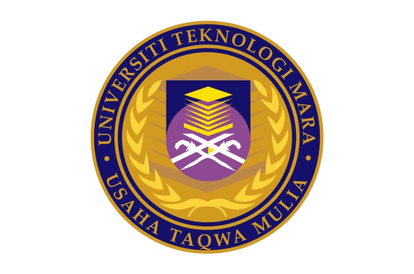

My academic background

I am currently pursuing a Diploma in Library Informatics at Universiti Teknologi MARA (UiTM) Kedah, under the Faculty of Information Science. Throughout my studies, I have developed strong interests in information management, digital literacy, and user experience design. I have consistently maintained good academic performance and was listed on the Dean’s List for Semester 1 to 3. My coursework and projects have helped me understand how technology can enhance library services and improve accessibility for users.
| Semester | Achievement |
|---|---|
| 1 | Dean’s List |
| 2 | Dean’s List |
| 3 | Dean’s List |
Before university, I completed my primary education at Sekolah Rendah Islam Integerasi Al-Farabi, Selangor, and secondary education at SAM Sultan Hisamuddin Sungai Bertih, Klang, Selangor, where I achieved 3A’s in UPSR and 5A’s in SPM. These achievements reflect my dedication and curiosity in learning, which continue to guide me in both academic and personal growth.